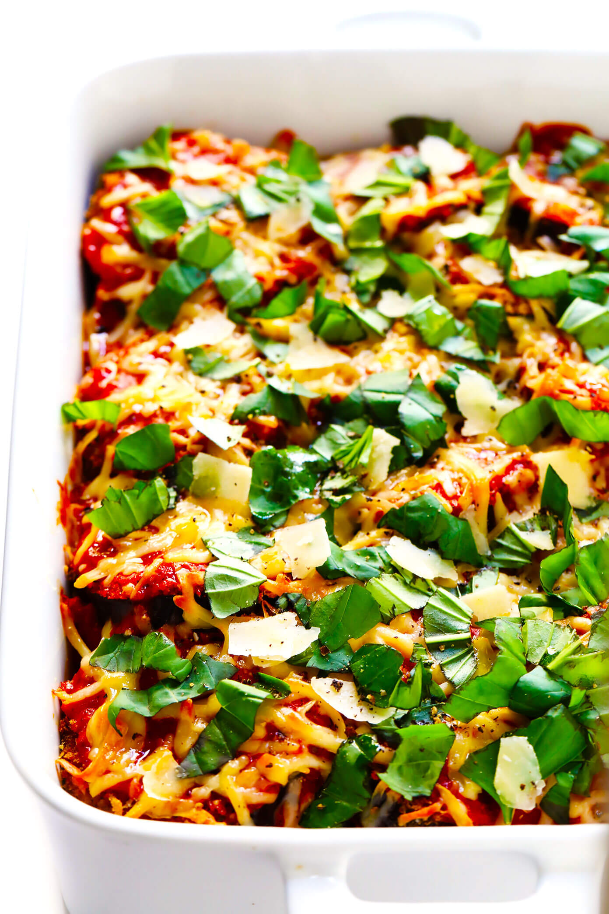
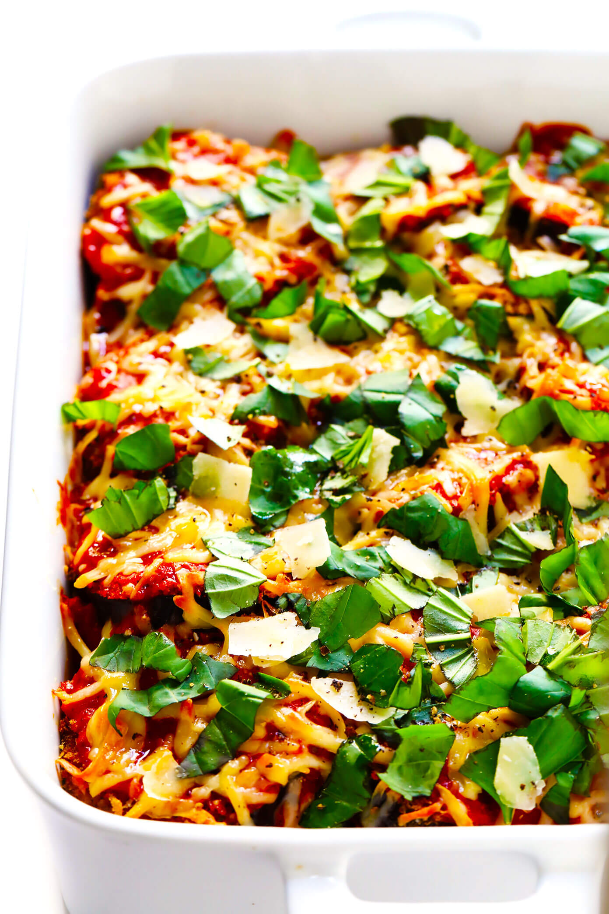

Vegan and Vegetarian Recipes
For vegan and vegetarian recipes options, I recommend the black bean and sweet potato enchiladas, a Spanish tortilla recipe, tomato soup with gnocchi and spinach, and baked eggplant parmesan. Another way to make the enchiladas a bit faster is to cook the beans and sweet potatoes as usual, but to stack the tortillas and fillings instead of rolling it. Personally I like to put some salsa on the Spanish tortilla, but it's also great on its own. The tomato soup recipe calls for Trader Joes products, however any tomato soup and gnocchi will do. I like to also put some whipping cream in the soup to make it more creamy. All of these recipes can be made in large batches to last throughout the week! Pictures from the recipes are shown below:


 

Fish Recipes
I have attached two recipes in this section: baked salmon in foil with glemon and rosemary and fish tacos with sauce. The salmon is complemented well with rice. If you can handle more spice in tacos, I recommend putting more hot sauce in the fish sauce. While fresh fish is better for the recipes, frozen fish also works as well. These recipes do not take up much time or ingredients and are very tasty! Pictures representing the dishes are shown below:


Chicken and Beef Recipes
Some simple chicken recipes that I recommend are chicken tikka masala and Guatemalan green chicken stew. The spices from the sauce and skew for these recipes are tasty and great with rice or bread. A beef recipe that I recommend with a bit of a twist is taco pizza. The taco pizza uses ground beef, serves many people, is customizable, and very fun. Some pictures of these recipes are shown below: